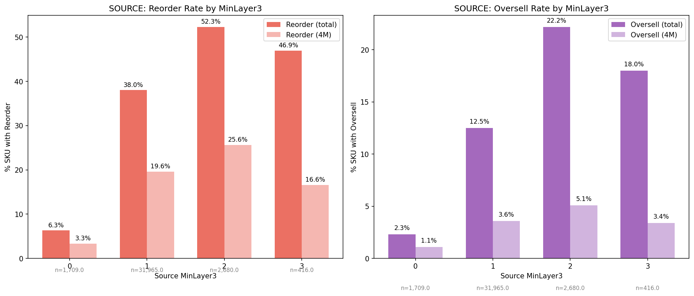
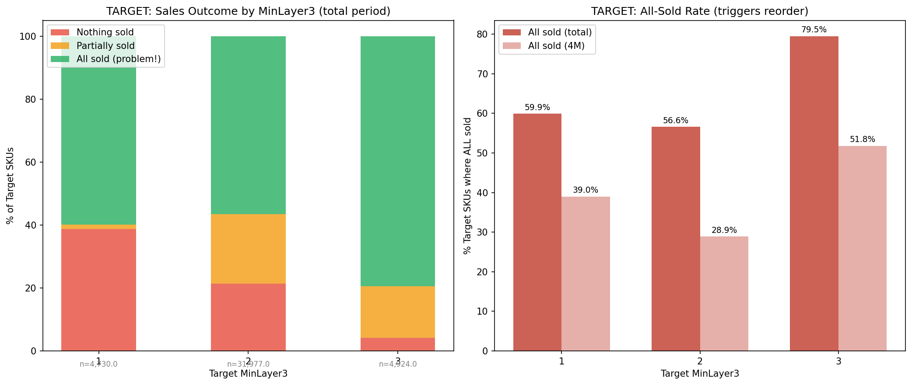

Vygenerováno: 2026-03-22 02:35
Reorder = po redistribuci se na source SKU objednalo nové zboží (jakýkoliv inbound).
Oversell = po redistribuci se na source prodalo víc, než zůstalo po odeslání (část redistribuce by se prodala i tak).

| MinLayer3 | SKU | Reorder % | Reorder 4M % | Oversell % | Oversell 4M % | Reorder ks | Oversell ks | Redistrib. ks |
|---|---|---|---|---|---|---|---|---|
| 0 | 1,709 | 6.3% | 3.3% | 2.3% | 1.1% | 121 | 43 | 2,061 |
| 1 | 31,965 | 38.0% | 19.6% | 12.5% | 3.6% | 13,978 | 4,564 | 40,598 |
| 2 | 2,680 | 52.3% | 25.6% | 22.2% | 5.1% | 2,052 | 812 | 4,716 |
| 3 | 416 | 46.9% | 16.6% | 18.0% | 3.4% | 464 | 159 | 1,379 |
All sold = vše se prodalo = zásoba klesla na 0 → prodejna objednala automaticky → redistribuce "zbytečná".
Nothing sold = nic se neprodalo → produkt na cílové prodejně nefunguje.
Cíl: na targetu má zůstat alespoň 1 kus (ne 0!).

| MinLayer3 | SKU | Nic neprodáno % | Vše prodáno % | Vše prodáno 4M % | Přijato ks | Prodáno ks | Zbývá ks |
|---|---|---|---|---|---|---|---|
| 1 | 4,730 | 38.7% | 59.9% | 39.0% | 4,883 | 4,682 | 2,328 |
| 2 | 31,977 | 21.4% | 56.6% | 28.9% | 35,238 | 65,404 | 20,195 |
| 3 | 4,924 | 4.2% | 79.5% | 51.8% | 8,633 | 29,183 | 1,745 |
MinLayer heuristika má systémové problémy:
Další fáze: rozpad dle síly prodejen, sezónnosti, brandu, stockoutů a cenových pásem.